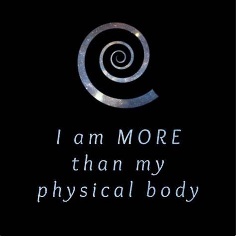
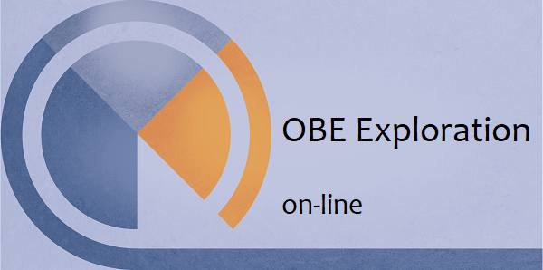

Monroe の開発した OBE 用の Gateway Affirmation は自己洗脳、自己催眠の呪文として機能している
 
(image source : http://www.lucidmindcenter.com)
(image source : https://www.monroeinstitute.it/prodotto/obe-exploration-online-2/)
前置き
- 昨日の記事で取り上げた Jesston Williams のインタビュー動画（Monroe 礼賛、OBE で私の人生が一変したよ、ドエライことがおきたよ、驚愕だよ…といった内容）を視てタイトルの件に思い至ったので記録しておく。Monroe の開発した Gateway Affirmation とは
- OBE を体験するための Gateway Program（初心者向けの OBE 実地訓練セミナー） で習うのがこの Gateway Affirmation （affirmation ＝ 精神世界でよくある自分へ向けた肯定的な語りかけの文句。例：私は XX ができる）。 - その具体的な内容は下の通り。DeepL
私は肉体以上の存在です。私は物理的な物質よりも優れているので、私は物理的な世界よりも偉大なものを知覚することができます。 したがって、私は、私と私に続く人々にとって有益で建設的な、より大きなエネルギーとエネルギーシステムを拡大し、経験し、知り、理解し、制御し、使用することを深く望みます。 また、私は、自分と同等かそれ以上の知恵と発展と経験を持つ人々の助けと協力、援助、理解を深く望みます。 私は、私が表明した願望以下のものを提供する可能性のあるいかなる影響力やいかなるソースからも、彼らの指導と保護をお願いします。原文
I am more than my physical body. Because I am more than physical matter, I can perceive that which is greater than the physical world. Therefore, I deeply desire to: to expand, to experience, to know, to understand, to control, and to use such greater energies and energy systems as may be beneficial and constructive to me and to those who follow me. Also, I deeply desire the help and cooperation, the assistance, the understanding of those individuals whose wisdom, development and experience are equal or greater than my own. I ask for their guidance and protection from any influence or any source that might provide me with less than my stated desires. ref: Robert Monroe Institute - Gateway Affirmation - Lucid Mind Center - https://www.lucidmindcenter.com/robert-monroe-institute/Gateway Affirmation が自己洗脳、自己催眠である根拠
- この Gateway Affirmation の文言は、その世界観の核心部分を予め訓練参加の深層意識まで染み込ませ（＝洗脳）、OBE で体験すべき筋書きをインストール（＝自己暗示による後催眠の効果を期待）するという重要な役割を持っている。 - たとえば…。Monroe の技法によって体験できる OBE によって「自分は肉体以上の存在だ」と実感したと大勢が証言している。だが、本当のところは 「私は肉体以上の存在です」 という、繰り返し頭に叩き込んだ affirmation の文言がそのまま自己催眠として機能した結果とみなすことができる。 - さらに、この現実世界を超えた世界に OBE で至ったという証言も、 「私は物理的な世界よりも偉大なものを知覚することができます」 という文言がそのまま自己催眠として機能した結果とみなすことができる。 - そして、Monroe の技法で OBE を試みる人々はセミナー参加の前にも、様々な OBE の体験談を読んだり聞いたりしている。そういった話の内容が、後に体験する OBE に色濃く反映している筈。 - 何よりも、OBE を達成するには少なくとも数週間から数か月間、ほぼ毎日、熱心に意識的な努力を行う必要がある。これだけ長期に渡って熱心に自己洗脳、自己催眠に取り組めば、全体の 10-20% （＝訓練を続けた 10人の内、ひとりかふたり程度）であるにせよ、何らかの OBE らしき体験をするのは、つまり自己催眠の効果が顯れるのは、さして不思議な事ではない。 - まして、稀ではあるがその OBE の最中に ESP 現象が関与することも起こりうる。すると OBE で遠く離れた知人がその自宅で XX をする様子を見たが、それは事実だった…といった類の体験をする。その結果（外れた多数の事例を無視して）、OBE は幻覚ではなくリアルだ…そう信じ込むことになり、ますます OBE にのめり込むことになる。本当のところ、OBE とは何なのか
… … … … (2021-11-17)
初出
Monroe の開発した OBE 用の Gateway Affirmation は自己洗脳、自己催眠の呪文として機能している （途中1） (2021-11-17)